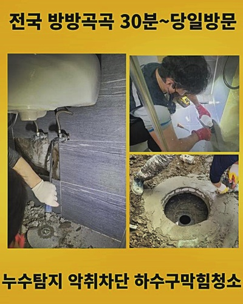
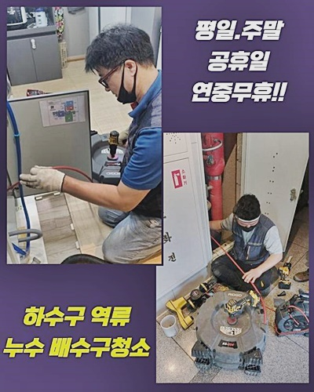
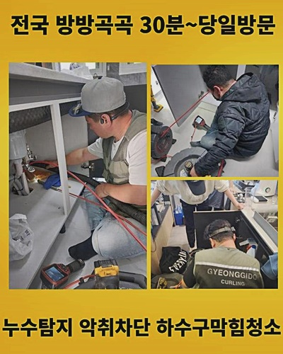
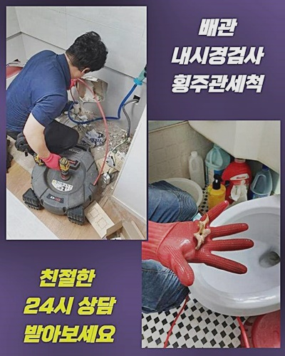
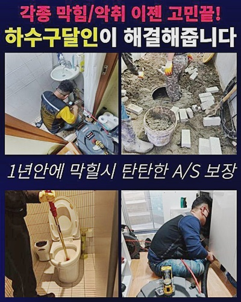
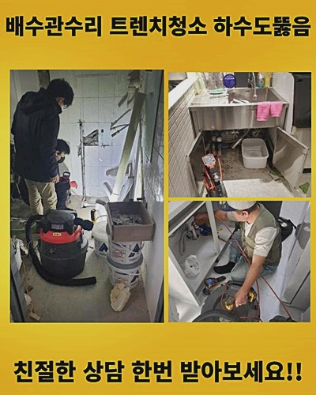
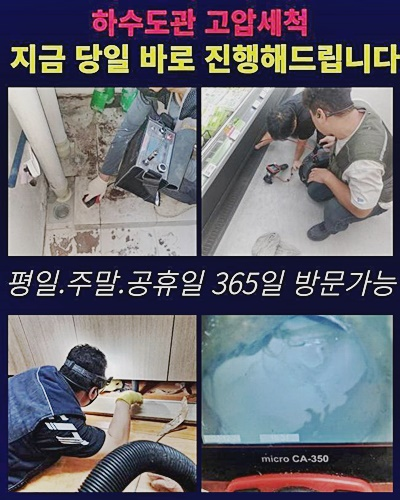

🏠 종로 연건동싱크대배수관막힘 통인동 냄새차단 배관설비공사
용인시 처인구 배관막힘 전문 시공 후기

📋 작업 개요
- 위치: 용인시 처인구, 수원시 영통구, 화성시 동탄
- 서비스 유형: 배관막힘, 누수수리, 내시경점검
- 작업 일시:
- 업체명: 하수구수사대 (010-5615-2118)
🔍 문제 상황
종로 연건동싱크대배수관막힘 통인동 냄새차단 배관설비공사
우리팀은 의뢰자가 바라시는 타임에 적절하게 이동해 드리고 있고 속히 대처하고 있답니다
출근하시기 전이나 새벽 시간대라고 하여도 바로 방문드려 공사진행 합니다
의뢰자님의 부탁에 빠르게 대처하여 퀄리티있는 통수 업무를 시행하는 부분이 저희들의 모토입니다
신용있는 자세를 바탕으로 큰 만족도를 충족하도록 정성을 다합니다
점검단계에선 근본적 동기를 판단하는데 업무량이 적지 않게 소용되었지만 건축물의 배수관이 범인이었다는 사실을 파악한 다음 해결방안을 구축하였어요
결론적으로 상가 이용자들의 괴로움을 줄이고 손님분들이 정상적으로 접근할 수 있게 조치할 수 있었죠
이런 사태는 여러 이유들로 나타나기 때문에 발빠른 응수가 불가결합니다
우리팀은 늘상 의뢰자의 고민에 즉각 응접해서 만족도 높은 업무로 보답하겠습니다
건축물 안쪽에서 생겨난 정체 현상은 작년부터 목격되었다는 부분을 도착 후에 듣게 되었죠
이 문제로 근방의 자영업자들에게 손해를 끼쳤는데 유독 화장실 사용이 어려웠답니다
이런 부분은 영업에 막중한 장애를 끼쳤기에 재빠른 대응이 불가결했어요
물이 막히는 상황은 영조물의 연식과 세부 구조 거기다 부분적인 고장을 포함하여 다채로운 이유로 터져버리는 것인데요

🔎 원인 분석
💡 전문가 진단: 정밀 진단 장비를 사용하여 슬러지의 고착 여부를 판명하고 타격/세척 작업을 실시했습니다.
그렇기 때문에 근원점을 찾아내려면 다양한 변인을 살펴보아야 하죠
보편적인 아파트 건물에서 여러 정황을 진행한 것을 포함하여 매일같이 기술과 관련한 숙련성을 체크하고 전문적 내용을 숙지하는 태도를 견지하여 최상위 수준이 될 수 있었습니다
저희들은 고가의 내시경촬영설비와 석션장비를 비롯해 누수와 관련된 다양한 최첨단 공구들을 갖고 있으므로 주변의 전문인들에 비해서 앞서나갈 수 있는겁니다
이러한 최첨단 공구들을 기초로 정체를 일으킨 슬러지를 소쇄하는 단계를 밟고 있는데요
우리팀은 민첩하게 고장의 이유를 영조물의 하부쪽에 설비된 관로에서 알아냈습니다
이 부위는 주변부의 상황때문에 용이하게 간파할 수 있는 부분은 아니었지만 메인 이슈가 되었던 장소였습니다
바로 합당한 기계를 활용해서 문제점을 조속하게 처치할 수 있던건데요
일반적인 거주지에서부터 공용 시설까지 여러종류의 처소에서 일어나는 장애이므로 전문인의 방문이 필수적이죠
만일에 파이프정체가 심중한 상황으로 발전하였다면 전문적인 진단이 요망되고 혼자 해결하려 한다면 더더욱 장애가 심화될 수밖에 없습니다
그렇기에 여러 난관을 만나시는 것보단 전문인에게 의탁하는 것이 좋다고 봐야합니다
기기들이 배수관에 박혀버릴 수도 있었기 때문에 플렉스샤프트 말고 스프링 기구를 사용해서 고속으로 가동시켜서 슬러지를 소거시켰고 반복적으로 작업해 파이프를 새것과 유사하게 변화하게 했죠
가정내의 욕실과 주방시설에 연계된 하수관에 적체된 찌꺼기들을 처리하고 고압세정으로 청결한 마무리가 가능했습니다
이것으로 막힘없는 상황을 유지중에 있답니다
일반건물은 물론이고 가정 안에서의 배관정체를 처리하려면 우선적으로 확실한 근원점을 발견할 필요성이 있답니다

🔧 작업 과정
찌꺼기들을 꼼꼼하게 소멸시킨 뒤에 배관내시경을 통해 관로를 관찰하고 어떠어떠한 고장이 생겨난건지 검열해 보았어요
보이는 부분만 처치하는 것에만 몰두하지 않고 메인 지점을 그냥 놔두게 된다면 얼마간의 기간이 지나버리고 거듭 정체가 가중될 수도 있습니다
그러므로 저희들은 근본적인 처소를 알아내지 못하는 상황에선 금액 청구를 하지 않는단 방향성을 갖고 있답니다
저희들의 이런 자신감넘치는 운영으로 훌륭한 결과를 드릴 수 있었습니다
우선 우리팀은 관로의 상부의 노폐물을 없애나가기로 했죠
해당 문제에 관하여 손님에게도 고하였고 관로 장애가 예기치 않게 발생되었다고 푸념하셨답니다
보통사람들은 이유를 알아내기 힘겨우나 저희들은 여러 고초 속에서도 배테랑들로만 구성돼 있으므로 어떠한 트러블이라도 해결 가능해요
저흰 숙련성과 친절함을 겸비한 담당자들로 형성돼 있으며 이번 건에 배정된 기사님 역시 장기간 수련한 기능공이셨습니다
이러한 분들이 같이 수리하므로 힘겨운 트러블도 헤쳐 나갈 수 있어요
내시경cctv를 동원하여 하수관 안을 들여다보니 이물질들이 답답하게 적층된 것을 직관하게 되었답니다
이것을 인접한 파이프와 관련된 것은 아닐지 검수하는 편이 옳겠다고 마음 먹고 싱크대까지 펼쳐진 관로를 점검하기로 했답니다
그 공간으로 이동하여 내부 현황을 배관카메라로 검열했더니 주방의 관로와 통하고 있다는 사실을 알게 되었어요
이를 통해 주된 이유를 파악하고 조치를 강구할 수가 있었답니다
이에 정밀한 조사와 발빠른 대응이 뚫음을 시행하는 것에 커다란 일을 담당한다는 걸 알았죠
또 다른 곳에서는 욕실 사용에 문제가 있어 즉각 방문을 바라셨는데요
전문가는 일사천리로 그쪽으로 가서 빠르게 작업을 끝맺으려 빠짐없이 수리도구들을 갖추었답니다
파이프 현황을 헤아리려고 물 성분을 주입하였더니 굼뜨게 없어지는 것을 볼 수 있었죠
이는 배관 내에 차단이 발생하였음을 말해주고 있었어요
점차적으로 악화되는 모습을 만날 수 있어요
이때문에 저희들은 올바른 제반설비를 이용해서 막힌 파이프를 원상복구할 수 있었답니다
하수관에 생긴 각종 고장들은 기술자의 진단과 적기에 완결하는 것이 필요합니다


✅ 작업 완료
시공 과정에서는 가늘고 긴 배수관 안을 조사해볼 필요성이 있어 요청되는 도구 일체를 두루 사용하여 효과적으로 업무를 이행하고 있죠
외부 정화조에 체결된 지점까지 편안하게 물이 흘러갈 수 있게 신중하게 시공하고 있답니다
예상을 벗어나 나타날 수 있는 변수들에도 빠르게 응대하여 질높은 결과를 제공해 드리려 공들여 일합니다
사소한 변화라고 외면하고 내버려두는 경우가 가끔가다 보이는데요
그건 한층 심각한 손해를 유발하게 하는 주요 원인이 되므로 이상을 감지하셨다면 신속히 방문요청을 이행하시는 것이 마땅합니다
문의자께서 신뢰감 넘치는 성과를 만나시게끔 열심으로 노력하겠습니다




⚠️ 하수구 배관 막힘 예방 및 관리 가이드
- ✅ 머리카락, 비닐, 물티슈 등 물에 분해되지 않는 이물질은 절대 흘려보내지 마세요.
- ✅ 기름기 많은 식기는 설거지 전 키친타올로 먼저 기름때를 닦아내세요.
- ✅ 주기적으로 배수구에 뜨거운 물을 가득 부어주어 유지방 고착을 방지하세요.
- ✅ 작업 후 1년 이내 재발 시 무상 A/S 보증 서비스를 제공합니다.
💡 핵심 정리
- 확실한 장비 작업(내시경 점검 및 샤프트 스케일링)으로 원인을 뿌리 뽑습니다.
- 작업 후 1년 이내에 동일한 부위 재발 시 100% 무상 A/S 서비스를 보장합니다.
- 서울 · 경기 · 인천 전 지역에 24시간 언제든 긴급 출동할 수 있도록 항시 대기 중입니다.
❓ 자주 묻는 질문 (FAQ)
🚨 용인시 처인구 배관막힘 문제로 고민이신가요?
정확한 원인 진단과 확실한 시공으로 재발 없는 해결을 약속드립니다.
24시간 긴급 출동 | 서울 · 경기 · 인천 전지역 | 1년 내 재발 시 무상 A/S